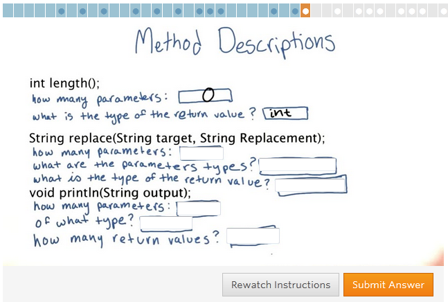

empty TOC
La capacitación está orientada a gente autodidacta y con ganas de aprender o profundizar sus conocimientos sobre Web UI. Esta iniciativa busca generar conocimiento sobre Web UI dentro de Globant y no ser una certificación de conocimiento.
Estas capacitaciones son actividaes de Globant para que los Globers podamos progresar en conocimientos técnicos y, a la vez, para mejorar el valor de la oferta de Globant a nuestros clientes.
Son módulos chicos, relacionados entre sí por un arbol de dependencias.
Algunos módulos son específicos de un track en particular, mientras que otros son genéricos y se conectan donde son necesarios. Por ejemplo, para hacer un módulo de JavaScript es necesario tener una base de programación independiente del lenguaje.
The students must pass all dependencies tests. They have the option of taking or skipping the course but approving the test is a must. This way we can be sure about the general knowledge level, independently of the student's self-esteem.
If a student opts for skipping the course, goes straight to the test and doesn't pass then he must take the course, re-taking the test is not allowed.
Algunos de estos módulos son muy breves, mientras que otros tienen un peso específico significativo, la característica común es que cada uno es una unidad independiente e indivisible.
Some are required at a certain point of a subject track (usually to be enabled to start into it), and some are there for your convenience.
For the non-technical, a brief explanation on binary and hexadecimal numbers, and related concepts (like mega- and giga- ).
How the different data types are actually stored in a computer's RAM or in files.
Uses and advantages of each format.
File formats, like text, CSV, XML.
Exámenes Online
In order to better assess the glober's knowledge we need good quality exams, made up of a variety of formats like the ones enumeated below.
This can be achieved by massaging the text and/or providing a set of valid answers.

It should be possible to set a "never mind" answer for a particular question that accepts any answer.
Also, consider symbolic answers, like values from system variables or collected from previous quizzes.
Allow for checking if the values are numeric and doing some calculations on then in order to check the correctness.